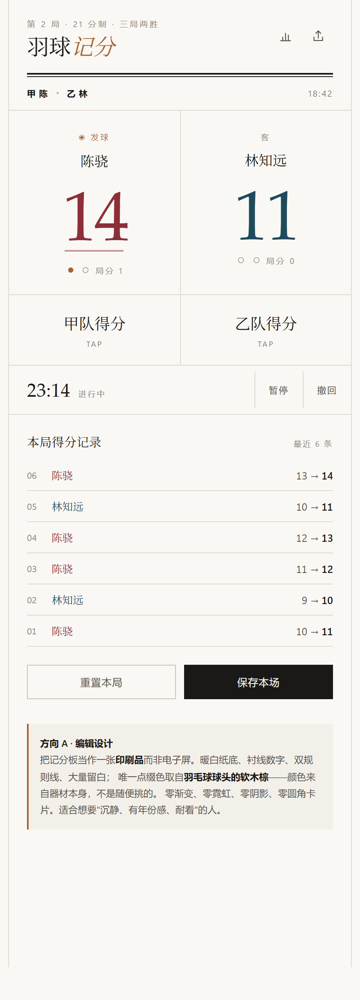
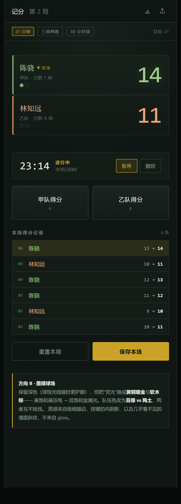
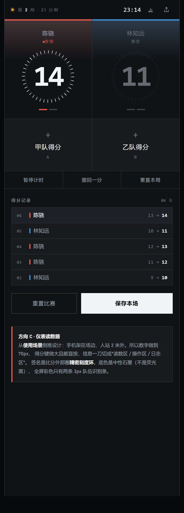

A编辑设计 / 纸质裁判记分卡

浅色、克制、有年份感。暖白纸底 + 衬线数字 + 双规则线。
点缀色取自羽毛球球头的软木棕。零渐变、零霓虹、零阴影。
最适合：想要沉静、耐看、像体育年鉴。
B墨绿球场 / 器械质感

仍是深色，但把荧光换成金属光。墨绿黑底 + 黄铜暖金 + 软木棕。
队伍色改为苔绿 vs 陶土，低饱和、互不抢戏。
最适合：球馆光线暗，但受够了"电竞感"。
C仪表读数器 / 场边场景

从使用场景倒推。手机架场边、人站 2 米外，所以数字 70px、按键可盲按。
签名是比分外的精密刻度环；全屏彩色只有两条 3px 识别条。
最适合：真正在场上打球，一瞥要能看清。